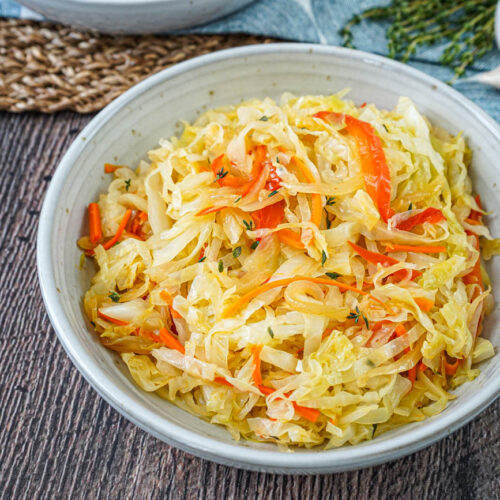

Steamed cabbage is a favourit that makes my lips cry
Steamed cabbage is a staple in many places around the World and the best way people have found to eat it to couple it with a bunch of other foods. its better cooked steamed